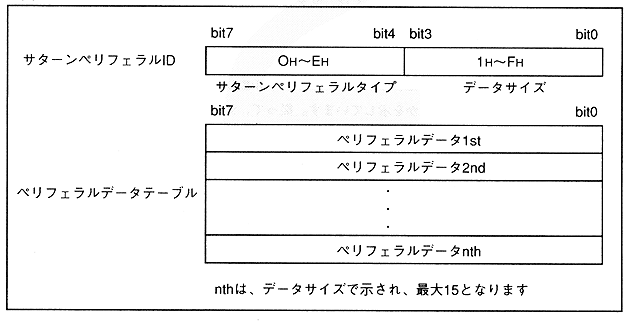

Table 3.8 Peripheral data size and port mode combinations
(when a peripheral is directly connected to a peripheral port)
| | Port mode (IREG1 setting) |
||
15 | 255 |
||
Peripheral data | 15 | Peripheral data structure 1 |
|
16-255 | Peripheral | Peripheral |
|
Figure 3.16 Peripheral data configuration 1
